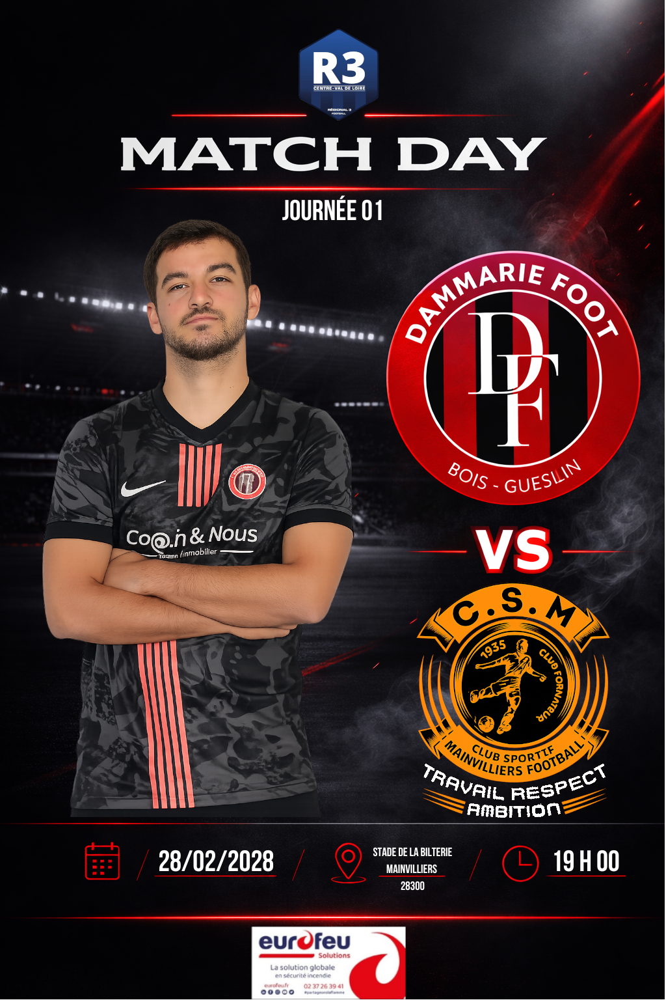
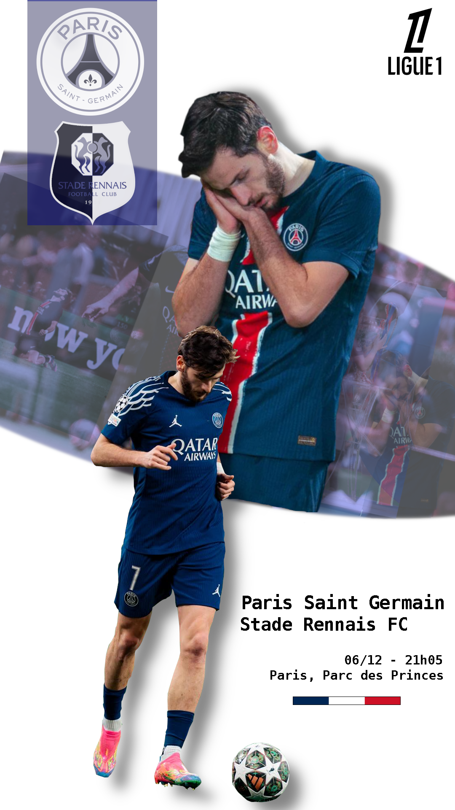

Contenu
Football
Création de visuels sportifs impactants et adaptés aux réseaux sociaux. Un contenu centré sur le design et l’engagement, publié régulièrement autour de l’univers du football.
Le concept
Le football génère énormément de contenu sur les réseaux, mais peu se distingue visuellement. L’objectif ici est simple : créer des visuels modernes, lisibles et impactants, pensés pour capter l’attention dès les premières secondes.
Chaque publication est construite avec une attention particulière portée au design : hiérarchie de l’information, cohérence graphique et adaptation aux formats des réseaux sociaux. Le but n’est pas de publier en masse, mais de proposer un contenu régulier et soigné.
« Un bon visuel attire l’attention, un visuel bien pensé la retient. »
Ce que je produis
-
Visuels sportifs
Création de visuels modernes et impactants autour du football : scores, affiches de match, compositions et formats adaptés aux réseaux sociaux.
-
Design pour réseaux sociaux
Infographies, carrousels et contenus visuels pensés pour capter l’attention et s’intégrer parfaitement dans les formats Instagram, Twitter ou TikTok.
-
Contenu visuel autour de l’actualité
Création de visuels liés aux matchs, transferts ou événements marquants, avec une approche rapide et adaptée au rythme des réseaux.
Aperçu visuel

Dammarie
Kvaratskhelia